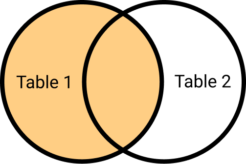
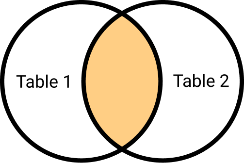
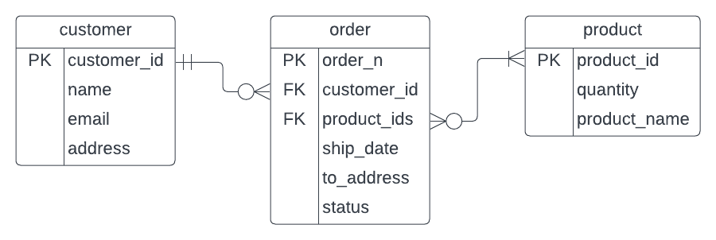

13 Relational Databases
Database is a collection of information that is organized, so data can be easily stored, managed, updated, and accessed. One type of databases is a relational database. Relational databases store structured data in tables composed of rows and columns, where each row, or record, contains information about a single entity, while columns, or attributes, represent different aspects of that entity.
relational database uses Tables and the Relationships between tables to store data. A row (record) represents a unique instance of the subject of a table, while a column (field) signifies a characteristic of that subject.
| Student ID | Student Name | HW1 | HW2 | MidTerm |
|---|---|---|---|---|
| 20101002 | Nikita | 88 | 100 | 76 |
| 20101003 | Nelson | 78 | 98 | 100 |
| 20101004 | Parsa | 98 | 99 | 95 |
| 20101005 | Shivani | 56 | 80 | 76 |
If rows in a given table can be associated in some way with rows in another table, the tables are said to have a relationship between them.
13.1 Types of Relationships
One to One (1:1)
A single row in the first table is related to only one row in the second table, and a single row in the second table is related to only one row in the first table.
One to Many (1:M) A single row in the first table is related to many rows in the second table, and a single row in the second table is related to only one row in the first table.
Many to Many (M:N) A single row in the first table is related to many rows in the second table, and a single row in the second table is related to many rows in the first table.
13.2 Key – Unique Identifier
Primary key (PK) is a column that uniquely identifies each row within a table. Every table should have a primary key! In order to connect (relate) tables, we put PKs of a table into another table. A PK of a table in another table is called foreign key (FK).
Keys
| ClassID (PK) | ProfessorID (FK) | Credits | Location |
|---|---|---|---|
| 620-01 | 1 | 4 | LM-340 |
| 623-01 | 2 | 2 | UM-102 |
| 663-01 | 2 | 2 | LO-234 |
| ProfessorID (PK) | Professor |
|---|---|
| 1 | Arman |
| 2 | Alessandra |
13.3 Types of Joins
In relational databases, a join is used to combine two or more tables based on a related column between them. There are different types of joins. To illustrate how the joins work we will be using two tables employees and projects. The first table contains employee_id (PK) and name, and the second one contains project_id (PK) and employee_id (FK).
# | layout-ncol: 2
print(employees) employee_id name
1 1 John
2 2 Jane
3 3 Bob
4 4 Alice
5 5 Tomprint(projects) project_id employee_id
1 1 1
2 2 2
3 3 3
4 4 1
5 5 4
6 6 613.3.1 Outer Joins
Outer join are used return matched data or unmatched data from one or both tables. You can see as making a more comprehensive table.
13.3.1.1 Left Join
Left join returns all the rows from the left table and only the matched rows from the right table. In an essence you are adding extra information to your left table.

left_join_result <- employees %>%
left_join(projects, by = "employee_id")Warning in left_join(., projects, by = "employee_id"): Each row in `x` is expected to match at most 1 row in `y`.
ℹ Row 1 of `x` matches multiple rows.
ℹ If multiple matches are expected, set `multiple = "all"` to silence this
warning.print(left_join_result) employee_id name project_id
1 1 John 1
2 1 John 4
3 2 Jane 2
4 3 Bob 3
5 4 Alice 5
6 5 Tom NA13.3.1.2 Right Join
Right join is very similar to left join, except it returns all the rows from the right table and only the matched rows from the left table.

right_join_result <- employees %>%
right_join(projects, by = "employee_id")Warning in right_join(., projects, by = "employee_id"): Each row in `x` is expected to match at most 1 row in `y`.
ℹ Row 1 of `x` matches multiple rows.
ℹ If multiple matches are expected, set `multiple = "all"` to silence this
warning.print(right_join_result) employee_id name project_id
1 1 John 1
2 1 John 4
3 2 Jane 2
4 3 Bob 3
5 4 Alice 5
6 6 <NA> 613.3.1.3 Full Join
Full join Returns all the rows from both tables and null values for non-matching rows. Here we are combining both tables

full_join_result <- employees %>%
full_join(projects, by = "employee_id")Warning in full_join(., projects, by = "employee_id"): Each row in `x` is expected to match at most 1 row in `y`.
ℹ Row 1 of `x` matches multiple rows.
ℹ If multiple matches are expected, set `multiple = "all"` to silence this
warning.print(full_join_result) employee_id name project_id
1 1 John 1
2 1 John 4
3 2 Jane 2
4 3 Bob 3
5 4 Alice 5
6 5 Tom NA
7 6 <NA> 613.3.1.4 Inner Join
Inner join returns only the matched rows between two table. So, only the rows that found a match from both tables will be kept.

inner_join_result <- employees %>%
inner_join(projects, by = "employee_id")Warning in inner_join(., projects, by = "employee_id"): Each row in `x` is expected to match at most 1 row in `y`.
ℹ Row 1 of `x` matches multiple rows.
ℹ If multiple matches are expected, set `multiple = "all"` to silence this
warning.print(inner_join_result) employee_id name project_id
1 1 John 1
2 1 John 4
3 2 Jane 2
4 3 Bob 3
5 4 Alice 513.3.2 Filtering Joins
13.3.2.1 Anti Join
An anti join returns the rows from the left table that do not have a corresponding match in the right table, without adding any new columns to the output. It is useful when you want to filter rows based on the absence of matching entries in the other table.
anti_join_result <- employees %>%
anti_join(projects, by = "employee_id")
print(anti_join_result) employee_id name
1 5 TomTom Does not have a project, assigned! May be he can take care of the project 6?
13.3.2.2 Semi Join
A semi join resembles an inner join in that it identifies matching rows between two tables. However, unlike an inner join, it does not add any new columns to the output. Instead, it filters the rows from the left table that have a corresponding match in the right table. You would use a semi join when you want to filter the left table based on the presence of matching entries in the right table.
semi_join_result <- employees %>%
semi_join(projects, by = "employee_id")
print(semi_join_result) employee_id name
1 1 John
2 2 Jane
3 3 Bob
4 4 Alice13.4 Drawing Databases
Remember we talked about UML? We are going to use it to draw out the Entity-Relationship Model to understand how tables in our database are related and how they are working together, which will simplify our later work. You can use UML code tools such as Mermaid and Graphviz, but in my opinion drag and drop web applications such as LucidChart and Draw.io are better for this task. To begin, let’s introduce an entity, which is an object (place,person,thing) that we want to track in our database. In our case it will be a customer, order, and product. Each entity has attributes, for example, customer has customer_id, name, email, address, etc. and similarly other entities also have a list of attributes. In your table entities will be reflected as rows and attributes as columns. These tables can be related to each other, which we show by drawing a line between the tables. To describe such relationships in numeric terms we use cardinality. You can think of cardinality as minimum and maximum number of relationships, very much like in Section 13.1 .

Let’s for examine the relationship between customer and order. Let’s first ask a question: what relationship does customer have with order? Using min, max framework, what is the minimum number of order a customer can have and what is the maximum number of order a customer can have? They can have no orders, so min = 0, and they can have many orders (2, 3, 4…), so max = many. We get customer to order relationship is 0 or many. Now let’s look in the opposite directions: how many customer can an order have? An order can have only one customer, no more no less. So, the relationship is one and only one.

Now let’s do the same for order and product. One order can have one or many products in it, and each product can be in none or many orders. The full diagram will look something like this:

You should draw a diagram any time you are planning to start a project with complex design. It will make crystal clear what tables you need to build and how to relate them. You can also scetch out a diagram whenever you are confused about a data set. If you would like to learn more on this topic, check out Lucid Software YouTube guides and Neso Academy’s Database Management Systems course.